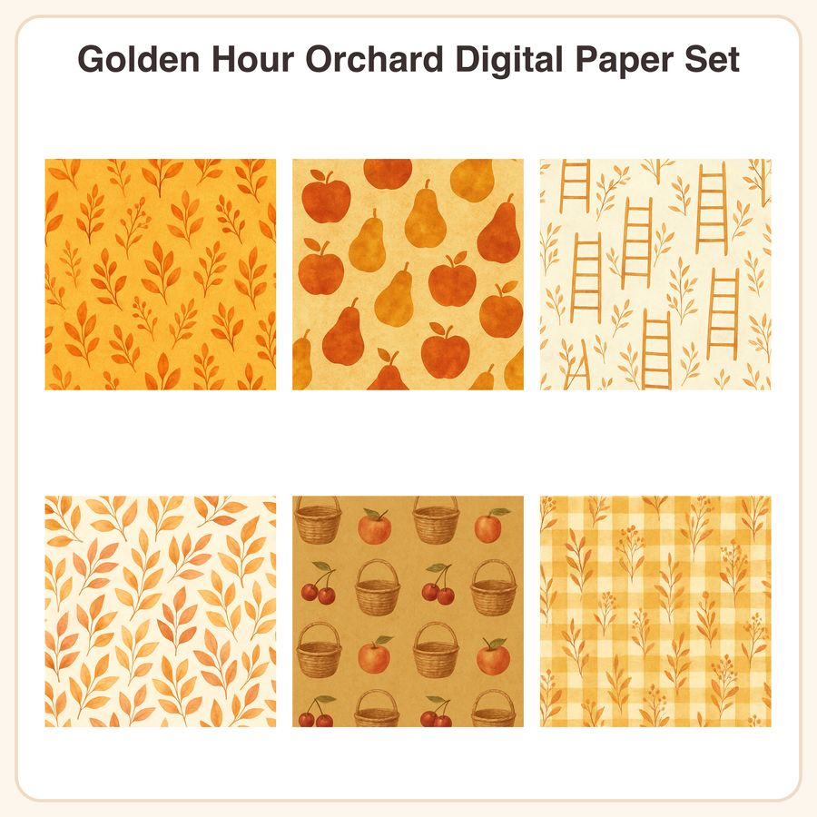

$4.99
View on EtsyCozy up your projects with the golden glow of a late-autumn orchard 🍂 This warm amber-gold-rust paper pack brings soft nostalgic texture to scrapbook pages, packaging, invitations, and more. What's included: • 6 seamless patterns, each provided as: - 1 high-res JPEG, 3072x3072px (12x12in @ 256dpi) - 1 repeatable PNG tile for easy resizing/tiling • 12 files total Patterns included: 1. Solid warm amber background with subtle sun-ray texture 2. Scattered apple and pear silhouettes in rust and gold tones 3. Repeating orchard-ladder line motif on cream background 4. Soft watercolor-style leaf clusters in ochre and burnt sienna 5. Tiny wicker-basket icons alternating with fruit on muted gold ground 6. Gentle gingham-plaid pattern in warm mustard and cream How to use: Open in Photoshop, Procreate, Canva, Cricut Design Space, or any program that supports JPEG/PNG. Use as scrapbook backgrounds, journal pages, packaging inserts, gift wrap, printable stationery, social media graphics, and more. PNG tiles can be seamlessly repeated at any size for larger yardage or wrap designs. License: Personal and small-business commercial use permitted for up to 500 finished units per design. Please do not resell, redistribute, or share the digital files themselves as-is or as part of another digital product. Honest disclosure: These designs were created in our shop with the help of AI tools, then refined and arranged into seamless repeat patterns by us. This listing describes the watercolor-style textures exactly as shown - no hand-painting or hand-lettering is involved. Instant download - no physical item will be shipped.